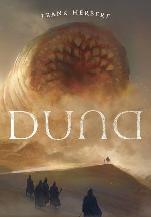
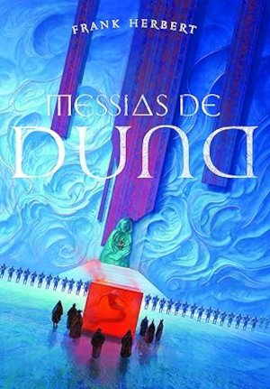
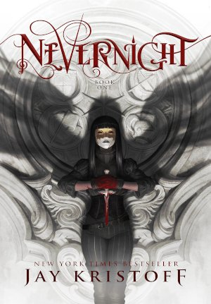
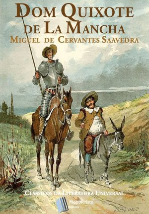
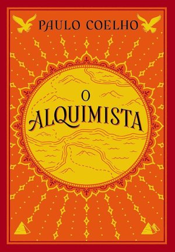

Duna
No planeta desértico de Arrakis, o jovem Paul Atreides é lançado em uma teia de traições políticas e misticismo religioso para controlar a "especiaria", a substância mais valiosa e cobiçada do universo.

No planeta desértico de Arrakis, o jovem Paul Atreides é lançado em uma teia de traições políticas e misticismo religioso para controlar a "especiaria", a substância mais valiosa e cobiçada do universo.

Doze anos após assumir o trono como imperador e messias, Paul Atreides enfrenta conspirações políticas e o peso de suas próprias visões proféticas enquanto tenta guiar a humanidade em meio ao fanatismo religioso.
Case é um ex-hacker de elite banido do ciberespaço que recebe uma última chance de cura.
Em troca, ele precisa realizar uma missão suicida: invadir uma das inteligências artificiais mais poderosas do mundo.
A humanidade é surpreendida pela chegada pacífica de naves alienígenas gigantes.
Os Senhores Supremos trazem uma era de paz e prosperidade utópicas, mas o preço dessa evolução pode ser o fim da própria identidade humana.
No continente de Westeros, onde os verões duram décadas e os invernos uma vida inteira, a morte do conselheiro do rei desencadeia uma sangrenta e implacável disputa pelo Trono de Ferro entre as grandes famílias nobres.

Mia Corvere sobreviveu à destruição de sua família e busca vingança.
Para conseguir seus objetivos, ela ingressa na Igreja da Noite, uma academia secreta de assassinos onde falhar nas provações significa a morte.
Um garoto órfão que vive infeliz com os tios descobre, aos 11 anos, que é um bruxo e é convidado a estudar na Escola de Magia de Hogwarts, onde encontra amigos, mistérios e verdades sobre o seu passado.

Enlouquecido pela leitura de romances de cavalaria, o fidalgo Alonso Quixano adota o nome de Dom Quixote e parte pelo mundo para combater injustiças imaginárias ao lado de seu fiel e realista escudeiro, Sancho Pança.

A jornada mística e inspiradora do jovem pastor Santiago em busca de seu tesouro pessoal pelas areias do deserto do Egito, uma saga que ensina sobre a importância de ouvir o próprio coração e decifrar os sinais da vida.
Uma profunda e impactante obra de pesquisa histórica que reconstrói os primeiros anos do comércio de cativos africanos, cobrindo o período que vai do primeiro leilão de escravos em Portugal até a morte de Zumbi dos Palmares.